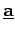
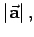
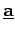
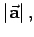

Inhalt Index DeskTop Bronstein

 Geometrie Vektoralgebra und analytische Geometrie Vektoralgebra Definition des Vektors
Geometrie Vektoralgebra und analytische Geometrie Vektoralgebra Definition des Vektors


Zur quantitativen Beschreibung von Vektoren  oder  als Strecke zwischen Anfangs- und Endpunkt A bzw. B dienen der Modul, d.h. der Absolutbetrag  der die Länge der Strecke angibt, sowie die Raumrichtung, die durch einen Satz von Winkeln angegeben wird.
oder  als Strecke zwischen Anfangs- und Endpunkt A bzw. B dienen der Modul, d.h. der Absolutbetrag  der die Länge der Strecke angibt, sowie die Raumrichtung, die durch einen Satz von Winkeln angegeben wird.